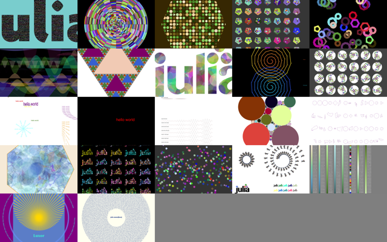
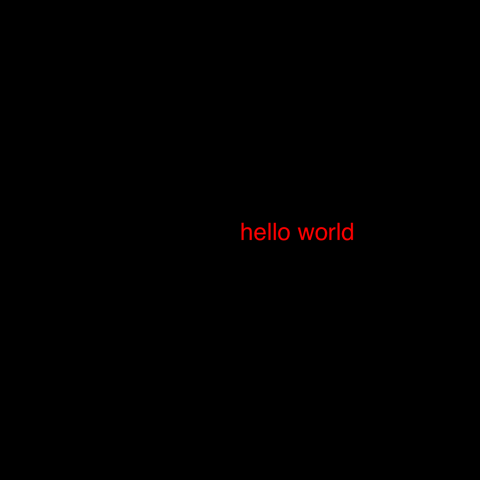
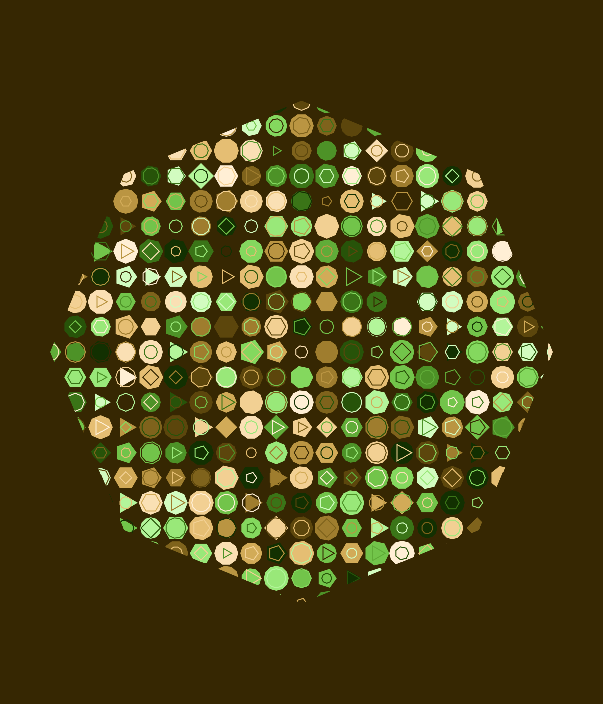
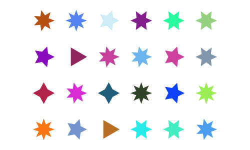
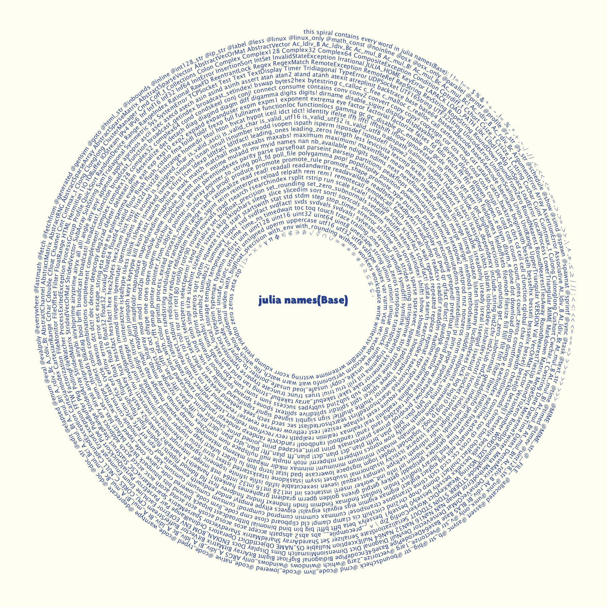
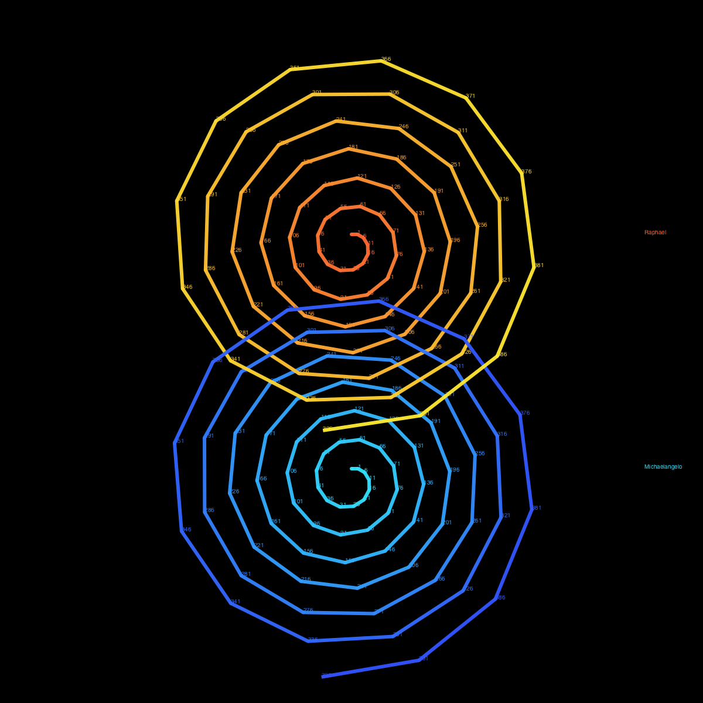
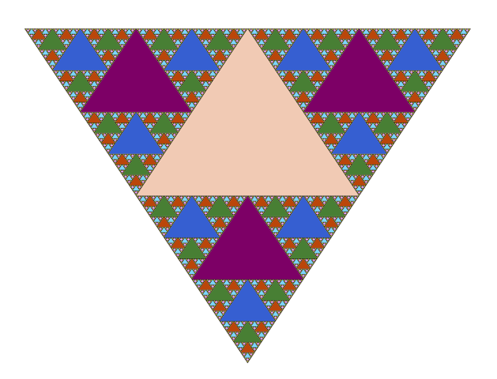

Luxor
Luxor provides some some basic vector drawing functions and some utilities for working with shapes, polygons, clipping masks, PNG images, and turtle graphics. It's jsut a dusting of syntactic sugar on Julia's Cairo graphics package (which should also be installed).

The idea of Luxor is that it's easier to use than Cairo.jl, with shorter names, fewer underscores, default contexts, and simplified functions. It's for when you just want to draw something without too much ceremony. If you've ever hacked on a PostScript file, you should feel right at home (only without the reverse Polish notation, obviously).
For a more powerful (but less easy to use) graphics environment, try Compose.jl. Colors.jl provides excellent color definitions and is also required.
Current status
It's been updated for Julia version 0.5 and for the new Colors.jl. It needs more testing on Unix and Windows platforms.
Installation and basic usage
To install:
Pkg.clone("https://github.com/cormullion/Luxor.jl")and to use:
using LuxorThe basic "Hello World"
Here's a simple "Hello world":

using Luxor, Colors
Drawing(1000, 1000, "/tmp/hello-world.png")
origin()
sethue("red")
fontsize(50)
text("hello world")
finish()
preview()The Drawing(1000, 1000, "/tmp/hello-world.png") line defines the size of the image and the location of the finished image when it's saved.
origin() moves the 0/0 point to the centre of the drawing surface (by default it's at the top left corner). Because we're using Colors.jl, we can specify colors by name.
text() places text. It's placed at the current 0/0 if you don't specify otherwise.
finish() completes the drawing and saves the image in the file. preview() tries to open the saved file using some other application (eg on MacOS X, Preview).
A slightly more interesting example

using Luxor, Colors
Drawing(1200, 1400, "/tmp/basic-test.png") # or PDF/SVG filename for PDF or SVG
origin()
background("purple")
setopacity(0.7) # opacity from 0 to 1
sethue(0.3,0.7,0.9) # sethue sets the color but doesn't change the opacity
setline(20) # line width
rect(-400,-400,800,800, :fill) # or :stroke, :fillstroke, :clip
randomhue()
circle(0, 0, 460, :stroke)
circle(0,-200,400,:clip) # a circular clipping mask above the x axis
sethue("gold")
setopacity(0.7)
setline(10)
for i in 0:pi/36:2pi - pi/36
move(0, 0)
line(cos(i) * 600, sin(i) * 600 )
stroke()
end
clipreset() # finish clipping/masking
fontsize(60)
setcolor("turquoise")
fontface("Optima-ExtraBlack")
textwidth = textextents("Luxor")[5]
textcentred("Luxor", 0, currentdrawing.height/2 - 400)
fontsize(18)
fontface("Avenir-Black")
# text on curve starting at angle 0 rads centered on origin with radius 550
textcurve("THIS IS TEXT ON A CURVE " ^ 14, 0, 550, Point(0, 0))
finish()
preview() # on macOS, opens in PreviewOverview
Types
The two main defined types are the Point and the Drawing. The Point type holds two coordinates, the x and y:
Point(12.0, 13.0)Drawings and files
To create a drawing, and optionally specify the filename and type, and dimensions, use the Drawing function.
Luxor.Drawing — Type.Create a new drawing, optionally specify file type and dimensions.
Drawing()creates a drawing, defaulting to PNG format, default filename "/tmp/luxor-drawing.png", default size 800 pixels square.
Drawing(300,300)creates a drawing 300 by 300 pixels, defaulting to PNG format, default filename "/tmp/luxor-drawing.png".
Drawing(300,300, "/tmp/my-drawing.pdf")creates a PDF drawing in the file "/tmp/my-drawing.pdf", 300 by 300 pixels.
Drawing(800,800, "/tmp/my-drawing.svg")`creates an SVG drawing in the file "/tmp/my-drawing.svg", 800 by 800 pixels.
Drawing(800,800, "/tmp/my-drawing.eps")creates an EPS drawing in the file "/tmp/my-drawing.eps", 800 by 800 pixels.
Drawing("A4", "/tmp/my-drawing.pdf")creates a drawing in ISO A4 size in the file "/tmp/my-drawing.pdf". Other sizes available are: "A0", "A1", "A2", "A3", "A4", "A5", "A6", "Letter", "Legal", "A", "B", "C", "D", "E". Append "landscape" to get the landscape version.
Drawing("A4landscape")Create the drawing A4 landscape size.
Note that PDF files seem to default to a white background, but PNG defaults to black. Might be a bug here somewhere...
To finish a drawing and close the file, use finish(), and, to launch an external application to view it, use preview().
Luxor.finish — Function.finish()Finish the drawing, and close the file. The filename is still available in currentdrawing.filename, and you may be able to open it using preview().
Luxor.preview — Function.preview()On macOS, open the file, which probably uses the default, Preview.app. On Unix, open the file with xdg-open. On Windows, pass the filename to the shell.
The global variable currentdrawing of type Drawing holds a few parameters:
julia> fieldnames(currentdrawing)
10-element Array{Symbol,1}:
:width
:height
:filename
:surface
:cr
:surfacetype
:redvalue
:greenvalue
:bluevalue
:alphaThe drawing area (or any other area) can be divided into tiles (rows and columns) using the PageTiler iterator.
Luxor.PageTiler — Type.A PageTiler is an iterator that returns the x/y coordinates of a set of imaginary tiles that divide up a rectangular space into rows and columns.
pagetiles = PageTiler(areawidth, areaheight, nrows, ncols, margin=20)where width, height is the dimensions of the area to be tiled, nrows/ncols is the number of rows and columns required, and margin is applied to area before the tile sizes are calculated.
Access the calculated tile width and height like this:
pagetiles = PageTiler(1000, 800, 4, 5, margin=20)
for (xpos, ypos, n) in pagetiles
ellipse(xpos, ypos, pagetiles.tilewidth, pagetiles.tileheight, :fill)
endAxes and backgrounds
The origin (0/0) is at the top left, x axis runs left to right, y axis runs top to bottom.
The origin() function moves the 0/0 point. The axes() function draws a couple of lines to indicate the current axes. background() fills the entire image with a color.
Luxor.background — Function.background(color)Fill the canvas with color. (if Colors.jl is installed).
Examples:
background("antiquewhite")
background("ivory")
background(Colors.RGB(0, 0, 0))
background(Colors.Luv(20, -20, 30))Luxor.axes — Function.Draw two axes lines starting at 0/0 and continuing out along the current positive x and y axes.
Luxor.origin — Function.origin()Set the 0/0 origin at the center of the drawing (otherwise it will stay at the top left corner).
Basic drawing
The underlying Cairo drawing model is similar to PostScript: paths can be filled and/or stroked, using the current graphics state, which specifies colors, line thicknesses and patterns, and opacity. You modify the drawing space by transforming/rotating/scaling it.
Many drawing functions have an action argument. This can be :nothing, :fill, :stroke, :fillstroke, :fillpreserve, :strokepreserve, :clip. The default is :nothing.
Positions are usually specified either by x and y coordinates or a Point(x, y). Angles are usually measured from the positive x-axis to the positive y-axis (which points 'down' the page or canvas) in radians, so clockwise.
Simple shapes
Functions for drawing shapes include circle(), ellipse(), arc(), carc(), curve(), sector(), rect(), pie(), and box().
Luxor.circle — Function.Draw a circle centred at x/y.
circle(x, y, r, action)action is one of the actions applied by do_action.
Draw a circle centred at pt.
circle(pt, r, action)Luxor.ellipse — Function.Draw an ellipse, centered at xc/yc, with width w, and height h.
ellipse(xc, yc, w, h, action=:none)Draw an ellipse, centered at c, with width w, and height h.
ellipse(c, w, h, action=:none)Luxor.arc — Function.Add an arc to the current path from angle1 to angle2 going clockwise.
arc(xc, yc, radius, angle1, angle2, action=:nothing)Angles are defined relative to the x-axis, positive clockwise.
Luxor.carc — Function.Add an arc to the current path from angle1 to angle2 going counterclockwise.
carc(xc, yc, radius, angle1, angle2, action=:nothing)Angles are defined relative to the x-axis, positive clockwise.
Luxor.curve — Function.Create a cubic Bézier spline curve.
curve(x1, y1, x2, y2, x3, y3)
curve(p1, p2, p3)The spline starts at the current position, finishing at x3/y3 (p3), following two control points x1/y1 (p1) and x2/y2 (p2)
Luxor.sector — Function.sector(innerradius, outerradius, startangle, endangle, action=:none)Draw a track/sector based at 0/0.
Luxor.rect — Function.Create a rectangle with one corner at (xmin/ymin) with width w and height h and do an action.
rect(xmin, ymin, w, h, action)Create a rectangle with one corner at cornerpoint with width w and height h and do an action.
rect(cornerpoint, w, h, action)Luxor.pie — Function.pie(x, y, radius, startangle, endangle, action=:none)Draw a pie centered at current x/y.
Angles start at the positive x-axis and are measure clockwise.
Luxor.box — Function.Create a rectangle between two points and do an action.
box(cornerpoint1, cornerpoint2, action=:nothing)Create a rectangle between the first two points of an array of Points.
box(points::Array, action=:nothing)Lines and arcs
There is a 'current position' which you can set with move(), and use implicitly in functions like line() and text().
Luxor.move — Function.Move to a point.
move(x, y)
move(pt)Luxor.rmove — Function.Move by an amount from the current point. Move relative to current position by x and y:
rmove(x, y)Move relative to current position by the pt's x and y:
rmove(pt)Luxor.line — Function.Create a line from the current position to the x/y position and optionally apply an action:
line(x, y)
line(x, y, :action)
line(pt)Make a line between two points, pt1 and pt2.
line(pt1::Point, pt2::Point, action=:nothing)Luxor.rline — Function.Create a line relative to the current position to the x/y position and optionally apply an action:
rline(x, y)
rline(x, y, :action)
rline(pt)Arrows
You can draw lines with arrows at the end with arrow().
Luxor.arrow — Function.Draw a line between two points and add an arrowhead at the end. The arrowhead length is the length of the side of the arrow's tip, and arrow head angle is the angle between the side of the tip and the shaft of the arrow.
arrow(startpoint::Point, endpoint::Point; arrowheadlength=10, arrowheadangle=pi/8)Draw a curved arrow, an arc centered at centerpos starting at startangle and ending at endangle with an arrowhead at the end. Angles are measured clockwise from the positive x-axis.
arrow(centerpos::Point, radius, startangle, endangle; arrowheadlength=10, arrowheadangle=pi/8)Paths
A path is a group of points. A path can have subpaths (which can form holes).
Luxor.newpath — Function.newpath()Create a new path. This is Cairo's new_path() function.
Luxor.newsubpath — Function.newsubpath()Create a new subpath of the current path. This is Cairo's new_sub_path() function. It can be used, for example, to make holes in shapes.
Luxor.closepath — Function.closepath()Close the current path. This is Cairo's close_path() function.
The getpath() function get the current Cairo path as an array of element types and points. getpathflat() gets the current path as an array of type/points with curves flattened to line segments.
Color and opacity
For color definitions and conversions, use Colors.jl. The difference between the setcolor() and sethue() functions is that sethue() is independent of alpha opacity, so you can change the hue without changing the current opacity value (this is similar to Mathematica).
Styles
The set- functions control the width, end shapes, join behaviour and dash pattern:
Luxor.setline — Function.Set the line width.
setline(n)Luxor.setlinecap — Function.Set the line ends. s can be "butt" (default), "square", or "round".
setlinecap(s)
setlinecap("round")Luxor.setlinejoin — Function.Set the line join, i.e. how to render the junction of two lines when stroking.
setlinejoin("round")
setlinejoin("miter")
setlinejoin("bevel")Luxor.setdash — Function.Set the dash pattern to one of: "solid", "dotted", "dot", "dotdashed", "longdashed", "shortdashed", "dash", "dashed", "dotdotdashed", "dotdotdotdashed"
setlinedash("dot")Luxor.fillstroke — Function.Fill and stroke the current path.
Luxor.stroke — Function.Stroke the current path with the current line width, line join, line cap, and dash settings. The current path is then cleared.
stroke()Base.fill — Function.Fill the current path with current settings. The current path is then cleared.
fill()Luxor.strokepreserve — Function.Stroke the current path with current line width, line join, line cap, and dash settings, but then keep the path current.
strokepreserve()Luxor.fillpreserve — Function.Fill the current path with current settings, but then keep the path current.
fillpreserve()gsave() saves a copy of the current graphics settings (current axis rotation, position, scale, line and text settings, and so on). When the next grestore() is called, all changes you've made to the graphics settings will be discarded, and they'll return to how they were when you used gsave(). gsave() and grestore() should always be balanced in pairs.
Luxor.gsave — Function.Save the current graphics state on the stack.
Luxor.grestore — Function.Replace the current graphics state with the one on top of the stack.
Polygons and shapes
Regular polygons ("ngons")
You can make regular polygons — from triangles, pentagons, hexagons, septagons, heptagons, octagons, nonagons, decagons, and on-and-on-agons — with ngon() and ngonv(). ngon() makes the shapes: if you just want the raw points, use ngonv, which returns an array of points instead:

using Luxor, Colors
Drawing(1200, 1400)
origin()
cols = diverging_palette(60, 120, 20) # hue 60 to hue 120
background(cols[1])
setopacity(0.7)
setline(2)
ngon(0, 0, 500, 8, 0, :clip)
for y in -500:50:500
for x in -500:50:500
setcolor(cols[rand(1:20)])
ngon(x, y, rand(20:25), rand(3:12), 0, :fill)
setcolor(cols[rand(1:20)])
ngon(x, y, rand(10:20), rand(3:12), 0, :stroke)
end
end
finish()
preview()Luxor.ngon — Function.Draw a regular polygon centred at x, y:
ngon(x, y, radius, sides=5, orientation=0, action=:nothing; close=true, reversepath=false)Use ngonv() to return the points of a polygon.
Draw a regular polygon centred at p:
ngon(centerpos, radius, sides=5, orientation=0, action=:nothing; close=true, reversepath=false)Luxor.ngonv — Function.Return the vertices of a regular n-sided polygon centred at x, y:
ngonv(x, y, radius, sides, orientation)ngon() uses the shapes: if you just want the raw points, use ngonv, which returns an array of points instead. Compare:
ngonv(0, 0, 4, 4, 0) # returns the polygon's points:
4-element Array{Luxor.Point,1}:
Luxor.Point(2.4492935982947064e-16,4.0)
Luxor.Point(-4.0,4.898587196589413e-16)
Luxor.Point(-7.347880794884119e-16,-4.0)
Luxor.Point(4.0,-9.797174393178826e-16)
ngon(0, 0, 4, 4, 0, :close) # draws a polygonReturn the vertices of a regular polygon centred at point p:
ngonv(pt, radius, sides=5, orientation=0)Polygons
A polygon is an array of Points. Use poly() to add them, or randompointarray() to create a random list of Points.
Polygons can contain holes. The reversepath keyword changes the direction of the polygon. The following piece of code uses ngon() to make two polygons, the second forming a hole in the first, to make a hexagonal bolt shape:
ngon(0, 0, 60, 6, 0, :path)
newsubpath()
ngon(0, 0, 40, 6, 0, :path, reversepath=true)
fillstroke()Polygons can be simplified using the Douglas-Peucker algorithm (non-recursive version), via simplify().
Luxor.simplify — Function.Simplify a polygon:
simplify(pointlist::Array, detail)detail is probably the smallest permitted distance between two points.
There are some experimental polygon functions. These don't work well for polygons that aren't simple or where the sides intersect each other.
Luxor.polysplit — Function.Split a polygon into two where it intersects with a line:
polysplit(p, p1, p2)This doesn't always work, of course. (Tell me you're not surprised.) For example, a polygon the shape of the letter "E" might end up being divided into more than two parts.
Luxor.polysortbydistance — Function.Sort a polygon by finding the nearest point to the starting point, then the nearest point to that, and so on.
polysortbydistance(p, starting::Point)You can end up with convex (self-intersecting) polygons, unfortunately.
Luxor.polysortbyangle — Function.Sort the points of a polygon into order. Points are sorted according to the angle they make with a specified point.
polysortbyangle(pointlist::Array, refpoint=minimum(pointlist))The refpoint can be chosen, but the minimum point is usually OK too:
polysortbyangle(parray, polycentroid(parray))Luxor.polycentroid — Function.Find the centroid of simple polygon.
polycentroid(pointlist)Returns a point. This only works for simple (non-intersecting) polygons. Come on, this isn't a CAD system...! :)
You could test the point using isinside().
Luxor.polybbox — Function.Find the bounding box of a polygon (array of points).
polybbox(pointlist::Array)Return the two opposite corners (suitable for box(), for example).
The prettypoly() function can place graphics at each vertex of a polygon. After the polygon action, the vertex_action is evaluated at each vertex. For example, to mark each vertex of a polygon with a circle scaled to 0.1:
prettypoly(pl, :fill, :(
scale(0.1, 0.1);
circle(0, 0, 10, :fill)
),
close=false)Luxor.prettypoly — Function.Draw the polygon defined by points in pl, possibly closing and reversing it, using the current parameters, and then evaluate (using eval, shudder) the expression at every vertex of the polygon. For example, you can mark each vertex of a polygon with a circle scaled to 0.1.
prettypoly(pointlist::Array, action = :nothing, vertex_action::Expr = :(); close=false, reversepath=false)Example:
prettypoly(pl, :fill, :(scale(0.1, 0.1); circle(0, 0, 10, :fill) ), close=false)
The expression can't use definitions that are not in scope, eg you can't pass a variable in from the calling function and expect this function to know about it. Yes, not tidy...
The isinside() returns true if a point is inside a polygon.
Luxor.isinside — Function.Is a point p inside a polygon pol?
isinside(p, pol)Returns true or false.
This is an implementation of the Hormann-Agathos (2001) Point in Polygon algorithm
Stars
Use starv() to return the vertices of a star, and star() to make a star.

using Luxor, Colors
w, h = 600, 600
Drawing(w, h, "/tmp/stars.png")
origin()
cols = [RGB(rand(3)...) for i in 1:50]
background("grey20")
x = -w/2
for y in 100 * randn(h, 1)
setcolor(cols[rand(1:end)])
star(x, y, 10, rand(4:7), rand(3:7)/10, 0, :fill)
x += 2
end
finish()
preview()Luxor.starv — Function.Make a star, returning its vertices:
starv(xcenter, ycenter, radius, npoints=5, ratio=0.5, orientation=0, close=true, reversepath=false)Use star() to draw a star.
Luxor.star — Function.Draw a star:
star(xcenter, ycenter, radius, npoints, ratio=0.5, orientation=0, action=:nothing, close=true, reversepath=false)Use starv() to return the vertices of a star.
Draw a star:
star(centerpos, radius, npoints=5, ratio=0.5, orientation=0, action=:nothing, close=true, reversepath=false)Use starv() to return the vertices of a star.
Text and fonts
Placing text
Use text() and textcentred() to place text. textpath() converts the text into a graphic path suitable for further manipulations.
Luxor.text — Function.text(str, x, y)
text(str, pt)Draw the text in the string str at x/y or pt, placing the start of the string at the point. If you omit the point, it's placed at 0/0.
In Luxor, placing text doesn't affect the current point!
Luxor.textcentred — Function.textcentred(str, x, y)
textcentred(str, pt)Draw text in the string str centered at x/y or pt. If you omit the point, it's placed at 0/0.
Text doesn't affect the current point!
Luxor.textpath — Function.textpath(t)Convert the text in string t to a new path, for subsequent filling/stroking etc...
Fonts
Use fontface(fontname) to choose a font, and fontsize(n) to set font size in points.
The textextents(str) function gets array of dimensions of the string str, given current font.
Luxor.fontface — Function.fontface(fontname)Select a font to use. If the font is unavailable, it defaults to Helvetica/San Francisco (on macOS).
Luxor.fontsize — Function.fontsize(n)Set the font size to n points. Default is 10pt.
Luxor.textextents — Function.textextents(str)Return the measurements of the string str when set using the current font settings:
x_bearing
y_bearing
width
height
x_advance
y_advance
The bearing is the displacement from the reference point to the upper-left corner of the bounding box. It is often zero or a small positive value for x displacement, but can be negative x for characters like j; it's almost always a negative value for y displacement.
The width and height then describe the size of the bounding box. The advance takes you to the suggested reference point for the next letter. Note that bounding boxes for subsequent blocks of text can overlap if the bearing is negative, or the advance is smaller than the width would suggest.
Example:
textextents("R")returns
[1.18652; -9.68335; 8.04199; 9.68335; 9.74927; 0.0]Text on a curve
Use textcurve(str) to draw a string str on a circular arc.

using Luxor, Colors
Drawing(1800, 1800, "/tmp/text-spiral.png")
fontsize(18)
fontface("LucidaSansUnicode")
origin()
background("ivory")
sethue("royalblue4")
textstring = join(names(Base), " ")
textcurve("this spiral contains every word in julia names(Base): " * textstring, -pi/2,
800, 0, 0,
spiral_in_out_shift = -18.0,
letter_spacing = 0,
spiral_ring_step = 0)
fontsize(35)
fontface("Agenda-Black")
textcentred("julia names(Base)", 0, 0)
finish()
preview()Luxor.textcurve — Function.Place a string of text on a curve. It can spiral in or out.
textcurve(the_text,
start_angle,
start_radius,
x_pos,
y_pos;
# optional keyword arguments:
spiral_ring_step = 0, # step out or in by this amount
letter_spacing = 0, # tracking/space between chars, tighter is (-), looser is (+)
spiral_in_out_shift = 0 # + values go outwards, - values spiral inwards
)start_angle is relative to +ve x-axis, arc/circle is centred on (x_pos,y_pos) with radius start_radius.
Text clipping
You can use newly-created text paths as a clipping region - here the text paths are 'filled' with names of randomly chosen Julia functions.

using Luxor, Colors
currentwidth = 1250 # pts
currentheight = 800 # pts
Drawing(currentwidth, currentheight, "/tmp/text-path-clipping.png")
origin()
background("darkslategray3")
fontsize(600) # big fontsize to use for clipping
fontface("Agenda-Black")
str = "julia" # string to be clipped
w, h = textextents(str)[3:4] # get width and height
translate(-(currentwidth/2) + 50, -(currentheight/2) + h)
textpath(str) # make text into a path
setline(3)
setcolor("black")
fillpreserve() # fill but keep
clip() # and use for clipping region
fontface("Monaco")
fontsize(10)
namelist = map(x->string(x), names(Base)) # get list of function names in Base.
x = -20
y = -h
while y < currentheight
sethue(rand(7:10)/10, rand(7:10)/10, rand(7:10)/10)
s = namelist[rand(1:end)]
text(s, x, y)
se = textextents(s)
x += se[5] # move to the right
if x > w
x = -20 # next row
y += 10
end
end
finish()
preview()Transforms and matrices
For basic transformations of the drawing space, use scale(sx, sy), rotate(a), and translate(tx, ty).
Base.scale — Function.Scale subsequent drawing in x and y.
Example:
scale(0.2, 0.3)Luxor.rotate — Function.Rotate subsequent drawing by a radians clockwise.
rotate(a)Luxor.translate — Function.Translate to new location.
translate(x, y)or
translate(point)The current matrix is a six number array, perhaps like this:
[1, 0, 0, 1, 0, 0]getmatrix() gets the current matrix, setmatrix(a) sets the matrix to array a, and transform(a) transforms the current matrix by 'multiplying' it with matrix a.
Luxor.getmatrix — Function.Get the current matrix.
getmatrix()Return current Cairo matrix as an array. In Cairo and Luxor, a matrix is an array of 6 float64 numbers:
xx component of the affine transformation
yx component of the affine transformation
xy component of the affine transformation
yy component of the affine transformation
x0 translation component of the affine transformation
y0 translation component of the affine transformation
Some basic matrix transforms:
translate(dx,dy) = transform([1, 0, 0, 1, dx, dy]) shift by scale(fx, fy) = transform([fx, 0, 0, fy, 0, 0]) scale by rotate(A) = transform([c, s, -c, c, 0, 0]) rotate to A radians x-skew(a) = transform([1, 0, tan(a), 1, 0, 0]) xskew by A y-skew(a) = transform([1, tan(a), 0, 1, 0, 0]) yskew by A flip HV = transform([fx, 0, 0, fy, cx(1-fx), cy (fy-1)]) flip
WHen a drawing is first created, the matrix looks like this:
getmatrix() = [1.0,0.0,0.0,1.0,0.0,0.0]When the origin is moved to 400/400, it looks like this:
getmatrix() = [1.0,0.0,0.0,1.0,400.0,400.0]To reset the matrix to the original:
setmatrix([1.0,0.0,0.0,1.0,0.0,0.0])Luxor.setmatrix — Function.Change the current Cairo matrix to matrix m.
setmatrix(m::Array)Use getmatrix() to get the current matrix.
Luxor.transform — Function.Modify the current matrix by multiplying it by matrix a.
transform(a::Array)For example, to skew the current state by 45 degrees in x and move by 20 in y direction:
transform([1, 0, tand(45), 1, 0, 20])Use getmatrix() to get the current matrix.
Clipping
Use clip() to turn the current path into a clipping region, masking any graphics outside the path. clippreserve() keep the current path, but also use it as a clipping region. clipreset() resets it. :clip is also an action for drawing functions like circle().
Luxor.clip — Function.Establish a new clip region by intersecting the current clip region with the current path and then clearing the current path.
clip()Luxor.clippreserve — Function.Establishes a new clip region by intersecting the current clip region with the current path, but keep the current path.
clippreserve()Luxor.clipreset — Function.Reset the clip region to the current drawing's extent.
clipreset()This example loads a file containing a function that draws the Julia logo. It can create paths but doesn't necessarily apply an action them; they can therefore be used as a mask for clipping subsequent graphics:
# load functions to draw the Julia logo
include("../test/julia-logo.jl")
currentwidth = 500 # pts
currentheight = 500 # pts
Drawing(currentwidth, currentheight, "/tmp/clipping-tests.pdf")
function draw(x, y)
foregroundcolors = diverging_palette(rand(0:360), rand(0:360), 200, s = 0.99, b=0.8)
gsave()
translate(x-100, y)
julialogo(false, true) # add paths for logo
clip() # use paths for clipping
for i in 1:500
sethue(foregroundcolors[rand(1:end)])
circle(rand(-50:350), rand(0:300), 15, :fill)
end
grestore()
end
origin()
background("white")
setopacity(.4)
draw(0, 0)
finish()
preview()Images
There is some limited support for placing PNG images on the drawing. First, load a PNG image using readpng(filename).
Luxor.readpng — Function.Read a PNG file into Cairo.
readpng(pathname)This returns a Cairo.CairoSurface, suitable for placing on the current drawing with placeimage(). You can access its width and height properties.
image = readpng("/tmp/test-image.png")
w = image.width
h = image.heightThen use placeimage() to place a loaded PNG image by its top left corner at point x/y or pt.
Luxor.placeimage — Function.Place a PNG image on the drawing.
placeimage(img, xpos, ypos)Place an image previously loaded using readpng().
Place a PNG image on the drawing using alpha transparency.
placeimage(img, xpos, ypos, a)Place an image previously loaded using readpng().
img = readpng(filename)
placeimage(img, xpos, ypos)
placeimage(img, pt::Point)
placeimage(img, xpos, ypos, 0.5) # use alpha transparency of 0.5
placeimage(img, pt::Point, 0.5)
img = readpng("examples/julia-logo-mask.png")
w = img.width
h = img.height
placeimage(img, -w/2, -h/2) # centered at pointYou can clip images. The following script repeatedly places an image after first using a circle to define a clipping path:

using Luxor
width, height = 4000, 4000
margin = 500
Drawing(width, height, "/tmp/cairo-image.pdf")
origin()
background("grey25")
setline(5)
sethue("green")
image = readpng("examples/julia-logo-mask.png")
w = image.width
h = image.height
x = (-width/2) + margin
y = (-height/2) + margin
for i in 1:36
circle(x, y, 250, :stroke)
circle(x, y, 250, :clip)
gsave()
translate(x, y)
scale(.95, .95)
rotate(rand(0.0:pi/8:2pi))
placeimage(image, -w/2, -h/2)
grestore()
clipreset()
x += 600
if x > width/2
x = (-width/2) + margin
y += 600
end
end
finish()
preview()Turtle graphics
Some simple "turtle graphics" functions are included. Functions to control the turtle begin with a capital letter: Forward, Turn, Circle, Orientation, Rectangle, Pendown, Penup, Pencolor, Penwidth, and Reposition.

using Luxor, Colors
Drawing(1200, 1200, "/tmp/turtles.png")
origin()
background("black")
# let's have two turtles
raphael = Turtle(0, 0, true, 0, (1.0, 0.25, 0.25)) ; michaelangelo = Turtle(0, 0, true, 0, (1.0, 0.25, 0.25))
setopacity(0.95)
setline(6)
Pencolor(raphael, 1.0, 0.4, 0.2); Pencolor(michaelangelo, 0.2, 0.9, 1.0)
Reposition(raphael, 500, -200); Reposition(michaelangelo, 500, 200)
Message(raphael, "Raphael"); Message(michaelangelo, "Michaelangelo")
Reposition(raphael, 0, -200); Reposition(michaelangelo, 0, 200)
pace = 10
for i in 1:5:400
for turtle in [raphael, michaelangelo]
Circle(turtle, 3)
HueShift(turtle, rand())
Forward(turtle, pace)
Turn(turtle, 30 - rand())
Message(turtle, string(i))
pace += 1
end
end
finish()
preview()Luxor.Turtle — Type.With a Turtle you can command a turtle to move and draw: turtle graphics.
The functions that start with a capital letter are: Forward, Turn, Circle, Orientation, Rectangle, Pendown, Penup, Pencolor, Penwidth, and Reposition.
There are also some other functions. To see how they might be used, see Lindenmayer.jl.
Luxor.Forward — Function.Move the turtle forward by d units. The stored position is updated.
Forward(t::Turtle, d)Luxor.Turn — Function.Increase the turtle's rotation by r radians. See also Orientation.
Turn(t::Turtle, r)Luxor.Circle — Function.Draw a filled circle centred at the current position with the given radius.
Circle(t::Turtle, radius)Luxor.Orientation — Function.Set the turtle's orientation to r radians. See also Turn.
Orientation(t::Turtle, r)Luxor.Rectangle — Function.Draw a filled rectangle centred at the current position with the given radius.
Rectangle(t::Turtle, width, height)Luxor.Pendown — Function.Put that pen down and start drawing.
Pendown(t::Turtle)Luxor.Penup — Function.Pick that pen up and stop drawing.
Penup(t::Turtle)Luxor.Pencolor — Function.Set the Red, Green, and Blue colors of the turtle:
Pencolor(t::Turtle, r, g, b)Luxor.Penwidth — Function.Set the width of the line drawn.
Penwidth(t::Turtle, w)Luxor.Reposition — Function.Reposition: pick the turtle up and place it at another position:
Reposition(t::Turtle, x, y)More examples
Sierpinski triangle
The main type is the Point.

using Luxor, Colors
function triangle(points::Array{Point}, degree::Int64)
global counter, cols
setcolor(cols[degree+1])
poly(points, :fill)
counter += 1
end
function sierpinski(points::Array{Point}, degree::Int64)
triangle(points, degree)
if degree > 0
p1, p2, p3 = points
sierpinski([p1, midpoint(p1, p2),
midpoint(p1, p3)], degree-1)
sierpinski([p2, midpoint(p1, p2),
midpoint(p2, p3)], degree-1)
sierpinski([p3, midpoint(p3, p2),
midpoint(p1, p3)], degree-1)
end
end
@time begin
depth = 8 # 12 is ok, 20 is right out
cols = distinguishable_colors(depth+1)
Drawing(400, 400, "/tmp/sierpinski.svg")
origin()
setopacity(0.5)
counter = 0
my_points = [Point(-100,-50), Point(0,100), Point(100.0,-50.0)]
sierpinski(my_points, depth)
println("drew $counter triangles")
end
finish()
preview()
# drew 9841 triangles
# elapsed time: 1.738649452 seconds (118966484 bytes allocated, 2.20% gc time)Luxor logo
A simple of example of clipping. The circle of radius 90 units sets a clipping mask or region, and subsequent curves are clipped by that circle, until the clipreset() function clears the clipping mask.

using Luxor, Colors, ColorSchemes
width = 300 # pts
height = 300 # pts
Drawing(width, height, "/tmp/luxor-logo.png")
function spiral(colscheme)
circle(0, 0, 90, :clip)
for theta in 0:pi/6:2pi
sethue(colorscheme(colscheme, rescale(theta, 0, 2pi, 0, 1)))
gsave()
rotate(theta)
move(5,0)
curve(Point(60, 70), Point(80, -70), Point(120, 70))
closepath()
fill()
grestore()
end
clipreset()
end
origin()
background("white")
scale(1.3, 1.3)
colscheme = loadcolorscheme("solarcolors")
spiral(colscheme)
finish()
preview()Index
Luxor.DrawingLuxor.PageTilerLuxor.TurtleBase.fillBase.scaleLuxor.CircleLuxor.ForwardLuxor.OrientationLuxor.PencolorLuxor.PendownLuxor.PenupLuxor.PenwidthLuxor.RectangleLuxor.RepositionLuxor.TurnLuxor.arcLuxor.arrowLuxor.axesLuxor.backgroundLuxor.boxLuxor.carcLuxor.circleLuxor.clipLuxor.clippreserveLuxor.clipresetLuxor.closepathLuxor.curveLuxor.ellipseLuxor.fillpreserveLuxor.fillstrokeLuxor.finishLuxor.fontfaceLuxor.fontsizeLuxor.getmatrixLuxor.grestoreLuxor.gsaveLuxor.isinsideLuxor.lineLuxor.moveLuxor.newpathLuxor.newsubpathLuxor.ngonLuxor.ngonvLuxor.originLuxor.pieLuxor.placeimageLuxor.polybboxLuxor.polycentroidLuxor.polysortbyangleLuxor.polysortbydistanceLuxor.polysplitLuxor.prettypolyLuxor.previewLuxor.readpngLuxor.rectLuxor.rlineLuxor.rmoveLuxor.rotateLuxor.sectorLuxor.setdashLuxor.setlineLuxor.setlinecapLuxor.setlinejoinLuxor.setmatrixLuxor.simplifyLuxor.starLuxor.starvLuxor.strokeLuxor.strokepreserveLuxor.textLuxor.textcentredLuxor.textcurveLuxor.textextentsLuxor.textpathLuxor.transformLuxor.translate